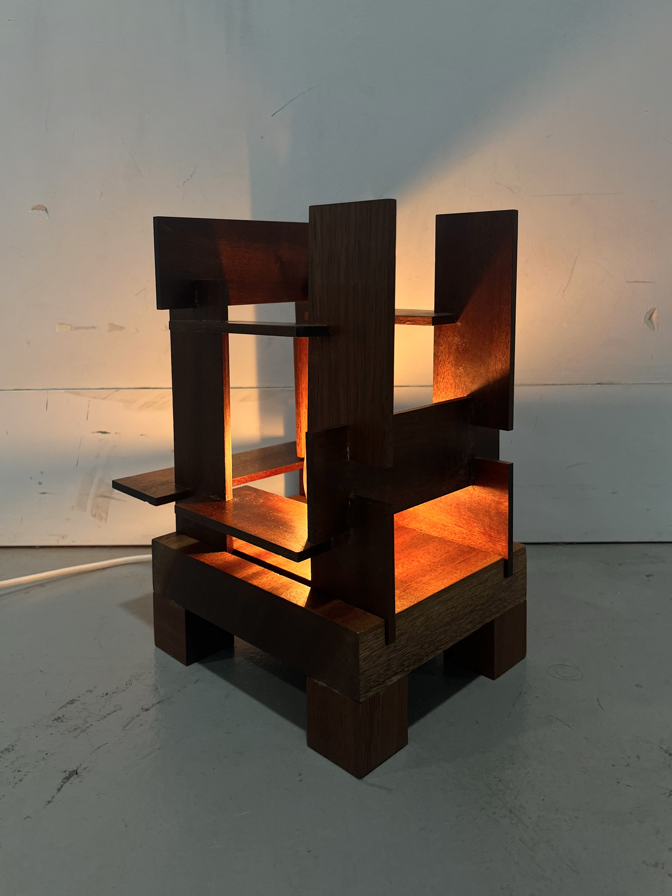

Wool Suit Dress
Wool Suit Dress
For my textiles major at uni, I made a tailored suit dress out of 100% pure wool sourced from fabric offcuts and vintage suits.

Timber Lamp
I made a timber lamp for an Industrial Technology unit I did at uni, which was inspired by modern architecture.